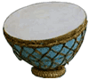
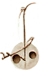
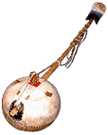

Nagara
Звук извлекают пальцами, колотушкой или палочками. Обычно нагара используются попарно.
Nay (Nai, Nal или Nar): Длинная, в основном продольная, флейта, широко распространенная на Ближнем и Среднем Востоке. История инструмента началась в эпоху пирамид и насчитывает более пяти тысячелетий. Ney на фарси значит «тростник», и этот материал чаще всего использовали для изготовления флейты (наряду с деревом и металлом).
История инструмента началась в эпоху пирамид и насчитывает более пяти тысячелетий. Ney на фарси значит «тростник», и этот материал чаще всего использовали для изготовления флейты (наряду с деревом и металлом).
Традиционный ней изготавливается из девятисегментного участка тростника, на котором вырезают от четырех до восьми отверстий. Строй флейт бывает различным.
Nyatiti: 7-струнная лира, на которой играют в западной Кении.

: Ударный инструмент, гибрид барабана и литавры. Распространен в Индии, Иране, Азербайджане и Узбекистане. Корпус нагара глиняный или металлический, гораздо реже деревянный, размер очень широко варьируется.Звук извлекают пальцами, колотушкой или палочками. Обычно нагара используются попарно.
Nay (Nai, Nal или Nar): Длинная, в основном продольная, флейта, широко распространенная на Ближнем и Среднем Востоке.
Традиционный ней изготавливается из девятисегментного участка тростника, на котором вырезают от четырех до восьми отверстий. Строй флейт бывает различным.

N'jarka: Небольшая малийская скрипка, сделанная из резонатора с длинным грифом и одной тонкой струны животного происхождения. Любимый инструмент Ali Farka Toure.Nyatiti: 7-струнная лира, на которой играют в западной Кении.
Ngoni: Древнейшая лютня Восточной Африки, оригинальное название происходит из языка Bambara. Разновидности ngoni встречаются от Марокко до Нигерии.
По одной из версий и банджо обязан своим происхождением ngoni, который завезли рабы в Новый Свет.
Корпус инструмента полый, дека в форме каноэ покрыта натянутым куском кожи животного, как это делают на голове барабана. Безладовый гриф вставляется в корпус, в отличии от kora, небольшим участком. Струны (4-7, из рыбьих нитей) привязаны к грифу с перемещаемыми узкими полосками кожи и тянутся до моста на краю корпуса. Благодаря этому у инструмента широкий диапазон настроек.
Традиционно на ngoni играли представители касты griot. Banzumana Sissoko, наиболее часто цитируемый и уважаемый малийский griot, и модернизатор инструмента Basekou Kouyate сыграли ключевую роль в современной популярности ngoni.

В мароканском братстве gnawa это gimbri, в культуре Manding 5-струнная модификация, называемая kontingo. В сенегальском языке Wolof инструмент именуется xalam (произносится halam). Однострунный gurkel из северного Мали также вариант ngoni.По одной из версий и банджо обязан своим происхождением ngoni, который завезли рабы в Новый Свет.
Корпус инструмента полый, дека в форме каноэ покрыта натянутым куском кожи животного, как это делают на голове барабана. Безладовый гриф вставляется в корпус, в отличии от kora, небольшим участком. Струны (4-7, из рыбьих нитей) привязаны к грифу с перемещаемыми узкими полосками кожи и тянутся до моста на краю корпуса. Благодаря этому у инструмента широкий диапазон настроек.
Традиционно на ngoni играли представители касты griot. Banzumana Sissoko, наиболее часто цитируемый и уважаемый малийский griot, и модернизатор инструмента Basekou Kouyate сыграли ключевую роль в современной популярности ngoni.